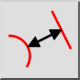
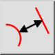
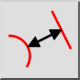
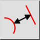

Distância de entidade a entidade
Barra de Ferramenta / Ícone:
 

Menu: Informação > Distância de entidade a entidade
Atalho: I, N
Comandos: infodistee | in
Esta é uma tradução automática.
Barra de Ferramenta / Ícone:
 

Menu: Informação > Distância de entidade a entidade
Atalho: I, N
Comandos: infodistee | in
Descrição:
Esta ferramenta mede a distância exata entre uma entidade e um ponto dado pelo usuário.
Procedimento: